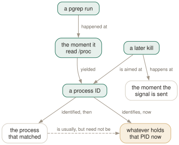

Day 09
Scripts and sharp edges
The race you cannot win, and when to put pgrep down.
By the end of today you can
- name the window between a pgrep and the kill that follows it, and close it where you can
- write a pgrep into a script without an unset variable selecting the whole machine
- recognise the four situations where the right answer is a different tool
A PID is a name that outlives what it named
Everything in this course produces PIDs, and a PID is only meaningful at the instant it was read. The moment pgrep finishes scanning /proc its answer starts going stale, and the classic three-line script is a race with a window you chose the size of:
pids=$(pgrep -f worker) # true at this instant
sleep 2 # ...and for however long you leave it
kill $pids # aimed at numbers, not at processes
If a worker exits during the gap and the kernel reissues its PID, the kill hits a stranger. Removing the sleep narrows the window; nothing removes it, because two separate syscall sequences cannot be made atomic from a shell.

pkill exists at all, and why signalling a cgroup with systemctl kill is better still: a cgroup is a set the kernel maintains, and it cannot be reassigned between your reading it and your acting on it.Two characters that stop a script destroying a session
The empty pattern matches every process. pgrep accepts it silently — Day 2 mentioned this, and here is the consequence in a script:
$ unset NOPE
$ pgrep -c "$NOPE"
613
$ pgrep -c .
613
Change the verb and that is every process you own, terminated, because a variable was misspelled or a config file was missing a line. set -u does not save you: it objects to an unset variable, not to one set to the empty string, and half the ways this happens produce the latter.
Three more rules for a scripted pgrep, all of them from earlier days:
- Every -f gets an -A. Day 2: without it the script matches itself, and with
sudoin the ancestry it matches that too. - Branch on the status, not on the output. Day 3:
if pids=$(pgrep …); thenrather than an unguarded$(…)that collapses to nothing and makes the next command complain about its own syntax. - Narrow with a criterion, not with a longer pattern. Day 4:
-u "$USER"or-xrestricts the blast radius in a way that another few characters of regex does not.
Three things that are true and will still surprise you
- Zombies count
- BUGS: "Defunct processes are reported." A
pkillthat reports success may have signalled something that exited hours ago. If a supposedly-killed process will not go away, checkpgrep -r Z -aand signal its parent instead. -Ocan fail silently- NOTES: it "will silently fail if /proc is mounted with the subset=pid option". Start times come from
/proc/PID/stat, which that hardening option hides. A monitor built on-Osimply goes quiet, and quiet looks exactly like healthy. Check withgrep ' /proc ' /proc/mounts. - The flag conflicts are unexplained
- Combining
-n,-oand-vprints the usage message with no error line at all. If a pgrep suddenly returns exit2and a wall of text after an innocuous edit, that pair is the first thing to look for.
When the answer is a different tool
pgrep's reach ends where the process table does. Four situations where reaching for it is the mistake:
- It is a systemd unit
- Use
systemctl.systemctl is-activereplaces a health check, andsystemctl kill --signal=HUP unitsignals the unit's entire cgroup — every process it started, whatever they renamed themselves to, with no pattern to get wrong and no race. Fighting a supervisor with pkill is a fight the supervisor wins. - You started it yourself
- Use
$!and the shell'swait. The PID you were handed at fork time has no ambiguity in it at all, and no pattern can be as precise. Reserve pgrep for processes you did not start. - You need a column pgrep does not have
- Use
ps. Memory, CPU time, start time as a date, the fullSTATfield, scheduling class — none are selectable or printable here. The idiomatic pairing is stillps -fp $(pgrep -d, …): pgrep selects, ps displays. - You want exact names and nothing clever
killallfrom PSmisc matches the whole name by default and needs-rbefore it will consider a regex — the opposite default from pkill, and safer for interactive use.killall slesayssle: no process foundwherepkill slewould have killed every sleep on the machine.pkill -xgets you the same behaviour if you prefer one family of tools.
What to read next
Read man pgrep now, properly, end to end. It is 227 lines and none of it will be new — which is what nine days were for. You will also notice how much of what you know is not in there: -p, --quiet, -Q, --env and pkill -m appear only in --help, and the --nslist behaviour appears nowhere.
Then the four pages the SEE ALSO section actually earns:
regex(7)- The pattern language, properly. Every anchoring and alternation question you will have.
signal(7)- What each signal's default action is, which decides whether
pkill -USR1is a message or an execution. ps(1)- Everything pgrep cannot print, and the
PROCESS STATE CODEStable that-rneeds. cgroups(8)- Where
--cgrouppaths come from, and why they are stable when names are not.
Today's habit
Open ~/pgrep-recipes.sh and read it from the top. Nine days ago the first line was a health check you had no reason to trust; by now every line should have a comment saying why it is written the way it is. Delete the ones you can no longer defend — that is not a loss, it is the whole exercise.
The habit worth keeping is the smallest one in the course, and it is from Day 7: write the pgrep, read the output, then change the word. Everything else here is elaboration on knowing what you have selected before you do something to it.
New vocabulary
Commands
| Command | Does |
|---|---|
systemctl kill --signal=HUP unit | Signal a unit's whole cgroup. No pattern, no race, no PID. |
killall -s 0 name | PSmisc's tool: exact name matching by default, no regex unless you ask. |
pkill -A -f "${PAT:?}" | The two guards that belong on every scripted pkill. |
Drillsdo these in a real terminal, today
Self-check
Answer out loud first, then unfold.
A script does pids=$(pgrep -f worker); sleep 2; kill $pids. Under what circumstances does it kill the wrong process, and does dropping the sleep fix it?
If a worker exits during those two seconds and the kernel hands its PID to something else, the kill lands on an innocent process. Dropping the sleep shortens the window but does not close it: there is always some interval between pgrep reading /proc and the signal being delivered, and nothing in the PID makes the second operation refer to the same process as the first.
In practice PID reuse is slow — this machine's /proc/sys/kernel/pid_max is 4194304, so the counter takes a long time to wrap — but plenty of systems still run with 32768, and a busy container churns through that in minutes.
The genuine fixes are to stop using PIDs as the handle: pkill does the match and the signal in one pass, and systemctl kill signals a cgroup, which is a set that cannot be reused out from under you.
Why is pkill -f "$PATTERN" one of the more dangerous lines you can put in a shell script?
Because if PATTERN is unset or empty, pgrep and pkill accept the empty pattern without comment and it matches everything. On a machine with 613 processes, pgrep -c "$NOPE" returns 613. The pkill equivalent terminates every process you own.
Two characters prevent it: pkill -f "${PATTERN:?}" makes the shell abort with an error if the variable is unset or empty. set -u alone is not enough, because it does not object to a variable that is set to the empty string.
Your monitoring script has used pgrep -O 300 -f batchjob to find stuck jobs for a year. You harden the machine by mounting /proc with subset=pid. What happens to the script?
It stops finding anything, and does not say so. pgrep(1)'s NOTES are explicit: "-O will silently fail if /proc is mounted with the subset=pid option". Start time comes from /proc/PID/stat, which that mount option hides, so every process looks ageless.
The symptom is a monitor that has gone permanently quiet, which is indistinguishable from a healthy system and is the worst failure mode a check can have. grep ' /proc ' /proc/mounts is the thing to look at, and it is worth looking at before you trust -O on a machine you did not configure.
You need to restart a service. Give two reasons to reach for systemctl rather than pkill.
First, systemd knows the set exactly. A unit's cgroup contains every process the service started, including the ones that renamed themselves, daemonised, or are called python3 like forty other things. systemctl kill signals that set with no pattern to get wrong and no race to lose.
Second, it knows what to do next. pkill terminates a process; systemd terminates it, respects Restart=, waits for TimeoutStopSec, escalates to SIGKILL on its own schedule, and records the result. pkill against a supervised service is a fight with the supervisor, and the supervisor wins.
Cheat sheet
# The scripted-pgrep checklist
pkill -A -f "${PAT:?pattern is empty}" # :? guards the empty-pattern disaster
# -A stops the script matching itself
if pids=$(pgrep -f "$PAT"); then ... # branch on status, not on output
pkill -x -u "$USER" NAME # narrow with a criterion, not more regex
#
# Prefer the one-pass tool: pkill X beats kill $(pgrep X) - no race.
#
# Reach elsewhere when:
# it is a unit -> systemctl is-active / systemctl kill --signal=HUP
# you started it -> $! and wait
# you need a column -> ps -fp $(pgrep -d, ...)
# you want exact names -> killall (exact by default; -r for regex)
#
# grep ' /proc ' /proc/mounts <- subset=pid makes -O silently fail
Everything through Day 09
Commands
| Command | Does |
|---|---|
pgrep sshd | List the PID of every process whose name matches the ERE sshd. |
pgrep -u root sshd | Two criteria, AND-ed: owned by root and named sshd. |
pgrep -u root,daemon | One criterion, OR-ed: owned by root or by daemon. No pattern at all. |
pgrep 'systemd|cron' | One ERE, two alternatives. Two bare patterns would be an error. |
pgrep --version | Print the procps-ng version this course is checked against. |
pgrep -f 'python3 .*worker' | Match the full command line, so the interpreter's arguments count. |
pgrep -x systemd | Only processes named exactly systemd — not systemd-logind. |
pgrep -A -f myscript.sh | Match command lines, but ignore every ancestor of this pgrep. |
cat /proc/PID/comm | The 15-character name pgrep matches by default. |
tr '\0' ' ' < /proc/PID/cmdline | The full command line pgrep matches under -f. |
ps -fp $(pgrep -d, -x sshd) | The man page's own idiom: hand a comma list to ps. |
renice +4 $(pgrep chrome) | Word-splitting turns newline-separated PIDs into separate arguments. |
pgrep -a -Q -f worker | List command lines with argument boundaries preserved. |
pgrep -P $$ | Everything your current shell forked directly. |
pgrep -t pts/3 -a | Everything running on one terminal — the other window. |
pgrep -g 0 | Processes in pgrep's own process group; -s 0 does the same for the session. |
pgrep -n -a firefox | The most recently started match, with its command line. |
pgrep -O 3600 -u $USER -a | Everything of yours that has been running for over an hour. |
pgrep -r D -a | Processes in uninterruptible sleep — the ones a dying disk produces. |
ls /proc/PID/task | Every thread of a process, by TID. |
cat /proc/PID/task/TID/comm | One thread's own name — often nothing like the process's. |
pgrep -w -f nginx | All threads of every matching process, since threads share the command line. |
pkill -e -f 'python3 worker' | Signal every match and say which ones. SIGTERM by default. |
pkill -HUP syslogd | The man page's own example: make a daemon reread its configuration. |
pkill --signal 0 -e -x myapp | Send nothing. A pure permission probe — but -e still says "killed". |
pidwait -e -x myapp | Block until every match has exited, including processes you did not start. |
cut -d: -f3 /proc/PID/cgroup | The cgroup v2 path --cgroup wants, exactly as it wants it. |
systemctl status PID | Which unit a PID belongs to — the reverse lookup --cgroup does not offer. |
ls -l /proc/PID/ns | The namespace identities a process is confined by. |
systemctl kill --signal=HUP unit | Signal a unit's whole cgroup. No pattern, no race, no PID. |
killall -s 0 name | PSmisc's tool: exact name matching by default, no regex unless you ask. |
pkill -A -f "${PAT:?}" | The two guards that belong on every scripted pkill. |
Options
| Option | Does |
|---|---|
-c, --count | Print how many processes matched instead of their PIDs. |
--quiet | Print nothing; the exit status is the whole answer. Long form only. |
-f, --full | Match against the whole command line instead of the process name. |
-x, --exact | Require the pattern to match the whole string, not a part of it. |
-i, --ignore-case | Match case-insensitively. |
-A, --ignore-ancestors | Drop every ancestor of this pgrep from the result. The fix for -f in scripts. |
-l, --list-name | Print the process name after the PID. Still the 15-character name, even under -f. |
-a, --list-full | Print the full command line after the PID. |
-Q, --shell-quote | Shell-quote each argument in -a output, so boundaries survive. Undocumented. |
-d, --delimiter | Join the PIDs with this string instead of a newline. A trailing newline is still added. |
-u, --euid | Match on the effective user — the authority the process is acting with. |
-U, --uid | Match on the real user — who started it. |
-G, --group | Match on the real group. Name or number. |
-P, --parent | Match processes whose parent is one of these PIDs. |
-g, --pgroup | Match on process group. 0 means pgrep's own. |
-s, --session | Match on session ID. 0 means pgrep's own. |
-t, --terminal | Match on controlling terminal, named without /dev/. |
-p, --pid | Match only these PIDs — a filter, not a lookup. Undocumented. |
-n, --newest | Keep only the most recently started match. |
-o, --oldest | Keep only the least recently started match. |
-O, --older | Keep matches started more than this many seconds ago. |
-r, --runstates | Keep matches in one of these kernel run states. A comma list. |
-v, --inverse | Return everything the query did not select — the whole query, not just the pattern. |
-w, --lightweight | Walk threads rather than processes: match every thread's own name, and print TIDs. |
-F, --pidfile | Read PIDs from a file and use them as a criterion. |
-L, --logpidfile | With -F, fail unless the pidfile is locked. |
--signal SIG, -SIG | Which signal to send. Name or number. Default SIGTERM. |
-e, --echo | Print a line per process signalled. Says "killed" whatever the signal was. |
-q, --queue N | Use sigqueue(3) and attach this integer to the signal. |
-H, --require-handler | Only signal processes that have a userspace handler for that signal. |
-m, --mrelease | Release the target's memory immediately after signalling. Undocumented. |
--cgroup | Match on cgroup v2 path. The whole path, leading slash included. A comma list. |
--ns PID | Match processes sharing all of this PID's namespaces. Needs root to be correct. |
--nslist | Restrict which namespaces --ns compares. Broken for lists of more than one. |
--env NAME=VALUE | Match on an environment variable, or just NAME for its presence. Undocumented. |